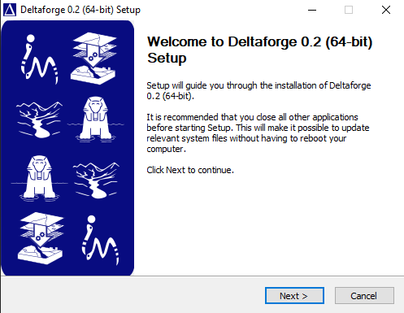
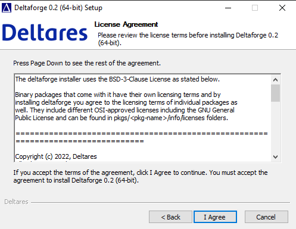
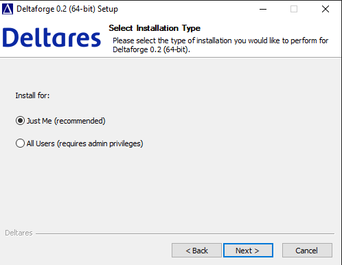
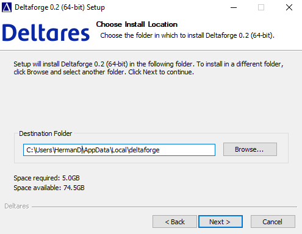
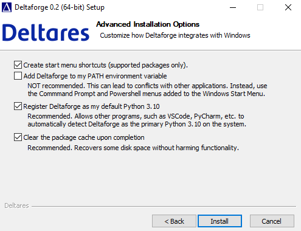
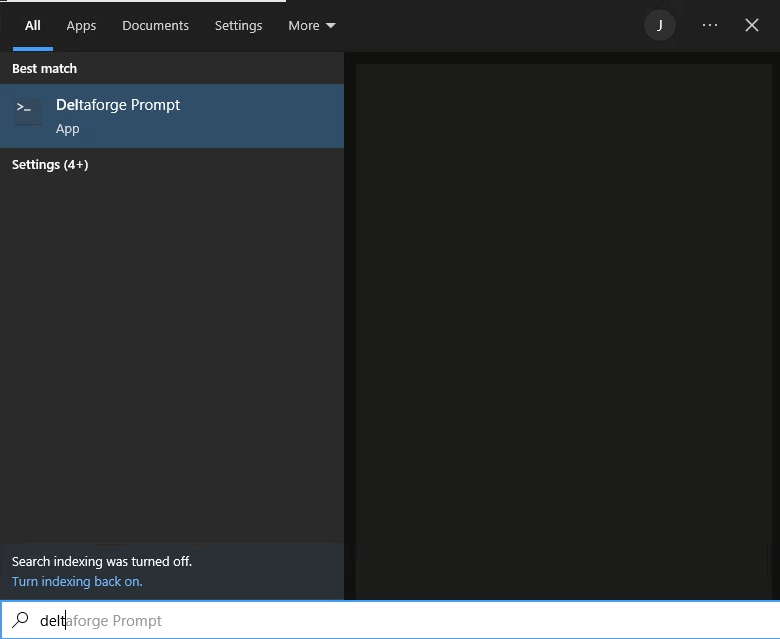
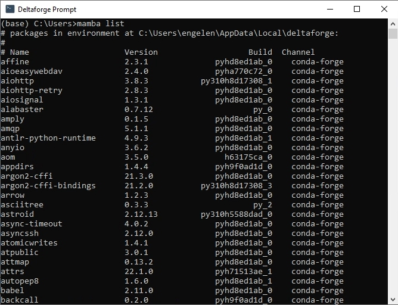

Install iMOD Python with Deltaforge
What is Deltaforge?
Deltaforge is a python distribution which includes iMOD Python and all its dependencies. It is provided as an installer and makes installing iMOD Python easy.You can download the Deltaforge installer via this link. If the subscription worked correctly, you will receive a download link via e-mail within only a few minutes.
Installation
To install Deltaforge, double-click the executable, this will open the installation Wizard. You will be greeted with the welcome screen.

Click "Next", and then "I agree" in the license agreement.

Next, you get to decide what type of installation you want. On your local machine it suffices to select Just me. If you are an admin of a server and you want to let others enjoy the Deltaforge installation as well, click All Users.

Next you get to decide where the python environment is installed. The default location is usually fine.

Finally, some further configuration is possible. The screenshots contains the options we recommend.

Using Deltaforge
The easiest way to start your environment is by pressing the Windows Key and start typing deltaforge. This will let you select the Deltaforge Prompt. Select this.

This will start a command prompt screen (cmd.exe), where at startup the Deltaforge python environment is activated.

mamba list to view all the packages installed.To view all the packages installed in the environment you can type mamba list and press Enter. This will list all packages installed in the environment. If you want to start coding, you can type spyder, which will start Spyder, a Python scientific development environment.